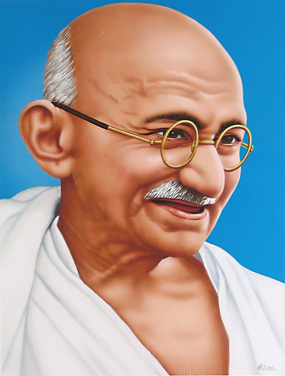

Mohandas Karamchand Gandhi

Other names Bāpū (father), Rāṣṭrapitā (the Father of the Nation)
Personal details
BornMohandas Karamchand Gandhi 2 October 1869 30 January 1948 (aged 78)
death Assassination (gunshot wounds)New Delhi, Dominion of India
Height:5ft 5in (165 cm)
Awards
Awarded for Contributions towards social, economic and political transformation through non-violence and other Gandhian methods
Sponsored by Government of India
Presented by Government of India
Reward(s) ₹ 1 Crore (10 million)
First awarded 1995 Last awards 2023
Total awarded 20 Latest winner Gita Press
The honorific Mahātmā (from Sanskrit 'great-souled, venerable'), first applied to him in South Africa in 1914, is now used throughout the world.[2]
Born and raised in a Hindu family in coastal Gujarat, Gandhi trained in the law at the Inner Temple in London and was called to the bar in June 1891, at the age of 22. After two uncertain years in India, where he was unable to start a successful law practice,Gandhi moved to South Africa in 1893 to represent an Indian merchant in a lawsuit. He went on to live in South Africa for 21 years. There, Gandhi raised a family and first employed nonviolent resistance in a campaign for civil rights. In 1915, aged 45, he returned to India and soon set about organising peasants, farmers, and urban labourers to protest against discrimination and excessive land-tax.
Parents
Gandhi's father, Karamchand Uttamchand Gandhi (1822–1885), served as the dewan (chief minister) of Porbandar state.[5][6] His family originated from the then village of Kutiana in what was then Junagadh State.[7] Although Karamchand only had been a clerk in the state administration and had an elementary education, he proved a capable chief minister
Marriage
n May 1883, the 13-year-old Mohandas Gandhi was married to 14-year-old Kasturbai Gokuldas Kapadia (her first name was usually shortened to "Kasturba", and affectionately to "Ba") in an arranged marriage, according to the custom of the region at that time.[30] In the process, he lost a year at school but was later allowed to make up by accelerating his studies.[31] Gandhi's wedding was a joint event, where his brother and cousin were also married. Recalling the day of their marriage, Gandhi once said, "As we didn't know much about marriage, for us it meant only wearing new clothes, eating sweets and playing with relatives." As was the prevailing tradition, the adolescent bride was to spend much time at her parents' house, and away from her husband.